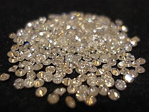
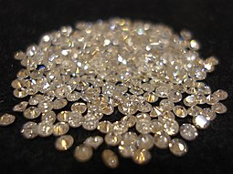
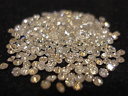

Buy Jewellery Online From Joyalukkas Joyalukkas is a premium shopping destination for gold and diamond jewellery dedicated to embellishing your everyday moments and milestones with elegance. We specialise in crafting diverse jewellery pieces suitable for men, women, and children of all ages. Incorporating glamour and sophistication, our jewellery adds finesse to any occasion, be it for regular use or special events. Shop Latest Jewellery Designs for Every Occasion Our latest jewellery designs available at our online jewellery stores and offline stores are crafted to perfection, so you can discover their timeless elegance. Whether it is your wedding day, birthday party, or corporate event, our jewellery collection available both at our stores and online jewellery stores includes a range of different styles that have been imagined and brought to life with intricate detailing. Purchase Exquisite Jewellery from Our Assorted Brands We take great pride in the exclusive collection of brands we house, each with its unique design aimed at raising your special day’s charm, thereby making it more memorable. Some of our major brands include Sita Kalyanam, Yuva, Pride, Ratna, Apurva, Eleganza, Veda, and Li’l Joy, among others. Explore Exquisite Jewellery from Our Wide-ranging Brands Our brands, each having a distinct motif, showcase the wide range of designs that cater to varied tastes: Yuva: Featuring artistic 18KT gold pieces, Yuva connects with the lively youthful generation through innovative jewellery designs symbolising daily life and emotions. Sita Kalyanam: This brand’s collection encapsulates Indian wedding traditions and the legendary love story of Lord Ram and Sita, as mentioned in the epic Ramayana. Pride: Pride presents meticulously cut diamond jewellery that adds a bold, stylish edge to any attire. Veda: Crafted after deriving inspiration from ancient temples, the Veda collection exemplifies the grandiosity of Joyalukkas with research-driven, intricately designed pieces. Ratna: Flaunting an assortment of traditional and contemporary designs crafted from 22 Ct. gold and premium gemstones, Ratna is a reflection of the adept craftsmanship of India’s top designers and artisans. Apurva: Drawing inspiration from the contemporary heroine, Apurva presents a collection of ethno-contemporary designs that sync with today’s women’s personas. Eleganza: This collection signifies royal women’s admiration for pristine, uncut diamond jewellery. Enlightened with the most exquisite uncut diamonds onboard 22 Carat gold, the Eleganza collection is truly upscale. Li’l Joy: Showcasing alluring collections for children, Li’l Joy presents delightful, stylish designs influenced by popular cartoons and the mesmerising beauty of nature. Each brand strives to enhance your inner radiance and distinguish your persona, adding considerable charm and relevance to your special occasion. Wedding Collection Our wedding collection serves as a reflection of the rich wedding traditions of India. Right from beautifully designed necklaces to elegant rings, we offer a complete wedding jewellery range that not only complements your wedding ensemble but also creates a unique wedding identity. Joyalukkas: Your Trusted Online Jewellery Store in India We firmly believe in earning the trust of our customers, and our highly transparent dealings are a testament to that belief. We strive to provide our customers with the best online jewellery shopping experience. Exclusive Features of Joyalukkas that differentiate us from others in the market, we offer you: Easy Exchange: You can easily exchange your purchase from any of our showrooms across the globe. Certified Jewellery: Quality is our priority. We provide certified jewellery, offering you nothing but the most authentic and top-quality products. 14 Days Return: If not satisfied with a product, we facilitate a 14-day return policy. Lifetime Product Service: We offer a lifetime product service to ensure that your jewellery retains its charm forever. 160+ Showrooms: Along with our online jewellery store, we serve our customers from over 160 showrooms globally. Wherever you are, find a Joyalukkas showroom near you. With Joyalukkas, you can raise your style quotient and cherish the joy of exclusive gold, diamond, and platinum jewellery designs and outstanding quality – every day, every moment!

The ED has accused the jewellery chain of violating provisions of the Foreign Exchange Management Act. The case relates to a huge amount of cash transferred to Dubai from India through Hawala channels and subsequently invested in Joyalukkas Jewellery LLC, Dubai which is 100 per cent owned by Joy Alukkas Verghese.
The Pawan group has rapidly expanded its foothold all over the globe since its inception in 1987. pawan is today a trusted brand in India, UK, USA, Singapore, Malaysia, UAE, Qatar, Kuwait, KSA, Bahrain & Oman. The brand is continuing to rapidly expand its presence in more countries across the world to fulfill its vision of Ornamenting the World